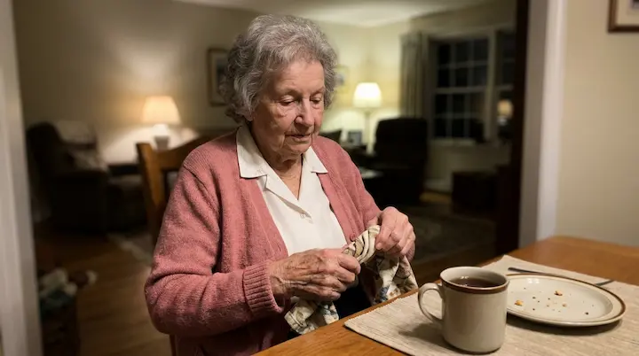
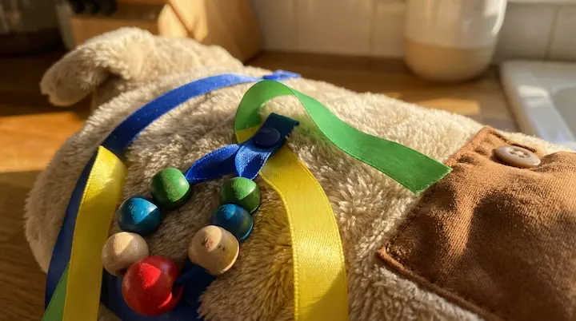
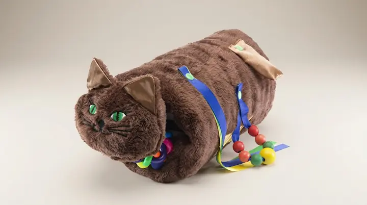
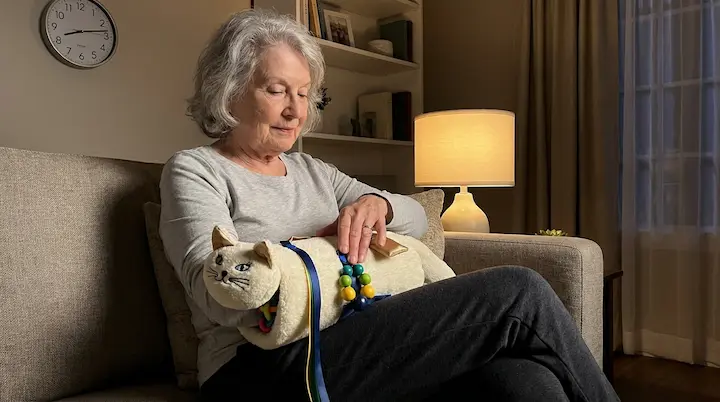
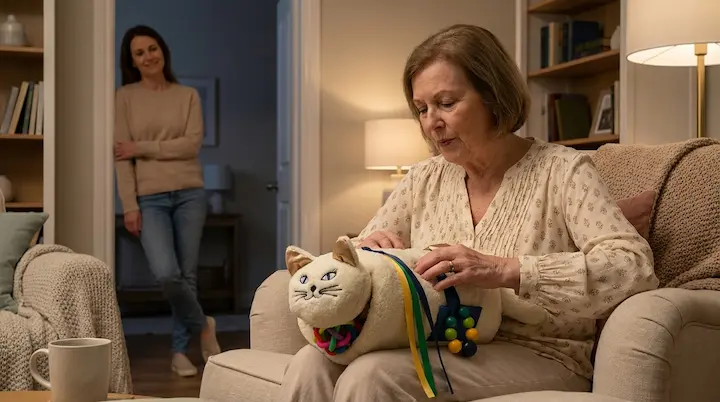
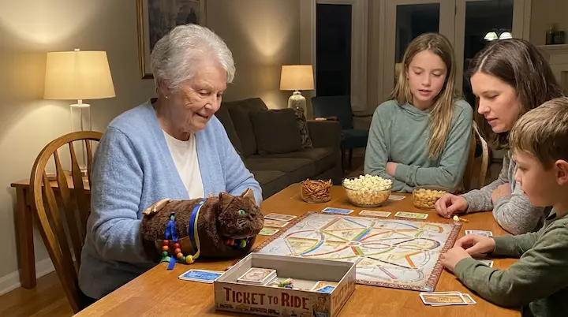

Last Tuesday morning, I watched my mother sit at the table without wringing her hands for the first time in weeks.
I stayed quiet in the kitchen and just looked at her, because that small moment had become rare in our home.
She smiled, looked up, and started telling a story from years ago with a calm voice I had missed.
It was one of those tiny moments that most people would overlook, but for us it felt huge.
Six months ago, by noon, she was already restless, moving her hands constantly and unable to settle.
By late afternoon, conversation got harder and small tasks felt heavy because her body never seemed to relax.
One night my sister called me near midnight and whispered, "Something is off. She cannot stay calm, even while resting."
She was right.
It was different.
And it was becoming part of every evening.
If you are reading this while thinking about someone you love, I want you to know that feeling is valid.
Many families do their best every day and still feel unsure if they are helping enough.
You can love someone deeply and still feel lost about what to do next. Both things can be true at the same time.

Why this happens
Let me take you back to where this started, because your home may feel very similar right now.
Sometimes these shifts happen so gradually that you only realize the pattern after weeks, not days.
My mother, Elena, was always composed and warm, even in stressful situations.
People used to describe her the same way.
"She brings peace wherever she goes."
That calm spirit was part of her identity and part of what held our family together.
Then subtle changes began.
At first they looked like little habits, the kind you think will pass on their own.
She rubbed her fingers nonstop at breakfast. She twisted napkins during dinner. She could not keep her hands still while watching TV.
At first we all brushed it off as nerves, a bad night of sleep, or simple tiredness.
But the pattern repeated every day.
Restlessness was no longer occasional. It became her baseline.
And once that became normal, the whole home started adjusting around it without even noticing.
Then bigger signs appeared.
She stopped sitting through long family dinners because she felt overwhelmed and needed to move constantly.
She skipped her usual evening routines because she was already mentally exhausted by sundown.
Even simple things, like finishing tea quietly or sitting through a short show, started to feel harder than they should.
She became quieter, not because she had less to say, but because daily challenges were taking up all her energy.
I could see it in her expression when she thought nobody was watching.
Frustration.
Silent, daily frustration.
Not loud, not dramatic, just present all the time in little moments that used to feel easy.
We received general advice: keep routines simple, create a calm environment, and offer comforting activities.
That advice was helpful in theory, but we still needed something concrete we could use in real moments.
"Is there anything practical we can do at home every day?" I asked.
We got guidance, but not a concrete comfort tool she could actually use every evening.
I sat in my car after that appointment and realized we needed something simple, gentle, and repeatable.
Something we could actually do on tired evenings, not only on our best days.
I refused to accept "this is just how evenings are now."
What most people don't realize
This was the part that surprised me most: small sensory actions can change the tone of an entire room.
That night, I started researching everything I could about sensory calming routines.
I was not searching for perfect language or trending advice. I was searching for what families could actually sustain.
Not generic tips. I focused on practical tools families truly use at home day after day.
I read caregiver experiences, memory-care resources, and sensory engagement guidance for older adults.
The stories that stood out were rarely dramatic. They were about quieter dinners, easier transitions, and less tension at bedtime.
One idea came up again and again.
Not because it was trendy, but because caregivers kept describing similar results in very ordinary language.
Gentle hand engagement through touch and repetition.
The logic is simple. When hands keep moving in anxious patterns, the nervous system can stay in a tense loop.
When those same hands are given a soft, repetitive activity, the body often responds with a little more steadiness.
Soft textures, ribbons, beads, and familiar movements can redirect that energy into something soothing and predictable.
Not a miracle. Not an overnight fix. Just a comforting ritual that fits real life.
And honestly, that was exactly what we needed: something humble, steady, and realistic.
That is when I found the Twiddle Sensory Hand Sleeve.
I was skeptical at first, honestly.
When you are caring for someone, you become careful with your hope, and for good reason.
Many products sound promising and then end up forgotten in a drawer.
As a caregiver, you get tired of buying things that seem useful for two days and then disappear.
So I looked at what matters most: comfort, tactile variety, ease of use, and whether it works in everyday moments.
This soothing aid was built for exactly that: keeping hands gently occupied through repetitive, calming touch.
No timers, no complicated controls, no pressure to "do it right."
Soft fabric. Interactive details. Daily usability.
And most importantly, it did not ask us to become experts. It simply gave us a calm activity we could repeat.
Comforting, practical, and easy to introduce at home.

What changed everything
The change was not dramatic on day one, but it was clear enough for us to keep going.
I ordered the Twiddle Sensory Hand Sleeve that same night.
It arrived a few days later, soft to the touch and simple enough to start using right away.
No complicated setup. We placed it on her hands after dinner and invited her to explore it at her own pace.
The whole process took less than ten minutes.
That mattered because routines only work when they are realistic on ordinary, tired evenings.
That weekend, I brought it to my parents' house and sat beside her quietly.
I wanted the moment to feel safe, not clinical, and definitely not like a test.
I did not present it as a big fix. I simply said, "Mom, let's try this together."
She slipped her hands inside and looked at me, unsure but curious.
"What am I supposed to do?" she asked.
"Just touch what feels good. No rules," I said.
That sentence helped both of us relax.
Instead of trying to force an outcome, we focused on making the moment gentle and familiar.
Five minutes in, her breathing slowed and her shoulders softened.
At the end, she smiled and said, "My hands feel quiet."
That one sentence changed our routine.
Not because everything became easy, but because we finally had a starting point we could repeat.
For the first time in a long while, she looked truly comfortable in her own chair.
Not perfectly still, not transformed overnight, just noticeably more at ease than before.

Close-up of calm hands exploring ribbons, beads, and soft textures on the sensory sleeve.
We started that same night with a simple routine.
And we protected that time as much as possible, even on busy days.
Fifteen minutes after dinner. Same chair. Same time. No pressure.
On difficult days we shortened it. On better days we let it run longer. We adapted without guilt.
Some evenings she focused on ribbons and soft fabric edges.
Other evenings she spent more time with beads and textured patches.
The key was consistency, not intensity.
If a session was short, that was okay. If she only engaged a little, that was okay too.
Within days, she began to associate that moment with the transition from agitation to calm.
Over time, even the act of sitting down with the sleeve started signaling, "It is time to settle now."
It was no longer "another item." It became part of her evening rhythm.

What Happened Over the Next Four Weeks
I kept notes because emotions can blur memory when you are living this day to day.
Week one was subtle. No dramatic transformation, just small signs.
And those small signs were exactly what gave us hope, because they felt real and repeatable.
She stopped wringing her hands every few minutes during dinner.
Week two, we noticed her evenings felt calmer.
She spent more time in conversation and less time trapped in repetitive anxious movement.
By the end of week two, my sister called me.
"She is ending the day with less agitation. You can see it in her hands," she said.
I wrote that down because I did not want to exaggerate one good evening.
Then calmer evenings became more frequent.
That gave us confidence to keep the routine simple and avoid overthinking it.
Week three, bedtime resistance eased and nighttime felt less chaotic.
We still had hard nights, but we had fewer spirals and more moments where she could reset.
Week four, she was more present in conversation instead of looking overwhelmed.
I sat at my kitchen table and cried again. This time from relief.
Something real was happening: gradual, practical, and visible in daily life.
And that kind of progress, even when small, can feel enormous to a family.
Now let me be very clear.
Families deserve honesty, especially when they are already carrying a lot.
Twiddle Sensory Hand Sleeve is not a medical device.
It is not intended to diagnose, treat, or cure any condition.
What it does is support a comforting routine that helps many people stay engaged and settle their hands.
It is a support tool, not a promise. The value comes from regular use and realistic expectations.
Think of it like a gentle reset for moments that feel difficult.
A way to meet the moment with comfort, instead of waiting for stress to build.
Simple routine. Calmer evenings.
What the Device Actually Is
People often ask this in very direct terms, so here is the clearest answer.
If you are wondering whether it is complicated, the short answer is no.
Here is what this comfort tool is, in practical terms.
Twiddle Sensory Hand Sleeve is a soft hand sleeve with textures, ribbons, beads, buttons, and tactile elements.
It is designed for home use and short sessions that fit naturally into daily routines.
You place it over the hands and let the person explore it through soothing, repetitive movements.
Some people prefer the beads, others the ribbons, others the textured fabric. There is no single "correct" way to use it.
No complicated steps. No learning curve.
That matters a lot when families are already juggling medications, appointments, and daily responsibilities.
Most people can use it while sitting, listening to music, watching TV, or winding down before bed.
It also helps during transition moments, like waiting before meals or settling after visitors leave.
The tactile stimulation helps redirect restless hand movement into a calmer, more comforting pattern.
For my mother, that was the difference between difficult evenings and more peaceful ones.
By month two, everyone around her noticed the change.
My brother said on a call, "She sounds calmer at night."
My daughter said, "Grandma stays with us at the table longer now."
Even close friends noticed and asked what changed.
When people close to you notice calmer moments returning, that says a lot.
It means the change is not only internal, it is visible in the rhythm of the home.

By month three, something else happened.
She started looking forward to that session.
It was no longer "something we should try." It became "our calming moment."
After dinner, she sat down, placed her hands inside the sleeve, and settled within minutes.
My father started saying, "Let's get her comfort sleeve."
That routine gave her consistency, and consistency gave us better evenings.
It gave us something to do together that felt supportive instead of stressful.
And better evenings usually lead to better mornings, even if the improvement is gradual.
Not perfect days every day. Just a clear improvement in calm, engagement, and overall mood.
That sense of calm changed everything at home.
One afternoon, my father told me, "The house feels lighter at night again."
Then he added, "That alone is worth a lot."
I understood exactly what he meant.

I also want to talk about cost, because it matters for real families.
Most caregivers are making practical decisions with limited energy and a real budget.
Twiddle Sensory Hand Sleeve is a one-time purchase.
No monthly subscription. No recurring platform fee.
For many households, predictable one-time costs are easier to manage than ongoing commitments.
Compared with constantly trying random tools, having one soothing aid at home can be a practical long-term option.
You buy it once, keep the routine simple, and use it whenever a calm hand activity is needed.
It can be part of a larger care routine, not a replacement for everything else you already do.
For us, it became one of those purchases we wish we had made sooner.
For my mother.
For my family.
For calmer evenings at home.
For fewer moments of helplessness when we were not sure what else to try.
It has been six months now.
She still uses her short sensory session almost every evening.
She stays longer at the table, settles faster at bedtime, and starts mornings with less restlessness.
Is every day perfect? No.
Is daily life better than before? Clearly, yes.
The difference is visible in her tone, her energy, and the atmosphere at home after dinner.
And that is exactly what we hoped for: a realistic routine she can keep.
Something steady, gentle, and easy to return to after difficult moments.
If Your Family Is Going Through This, Read This Part
You are not behind. You are not failing. You are probably carrying more than people can see.
And if nobody has told you lately, showing up every day for someone you love is meaningful work.
I am writing this for families who feel daily restlessness is taking over evenings at home.
When someone you love struggles to stay calm, everything can feel heavier than it should.
You try routines, advice, and random products, and still feel like nothing truly sticks.
I understand that frustration.
Twiddle Sensory Hand Sleeve is not a miracle product, and I will not present it as one.
It is simply one practical tool that can make hard moments softer and more manageable.
But it can be a practical starting point for a daily calming ritual people can actually follow.
A short session.
Gently engaged hands.
A better transition from agitation to calm.
If this sounds like your household, do not overcomplicate it.
Choose one time of day, keep expectations gentle, and let familiarity do the rest over time.
Start simple, stay consistent, and let small calm moments add up.
You do not have to do everything at once. One calm step at a time is enough.
That is what worked for us.
And I wish we had started earlier.
Last Tuesday morning, my mother sat with her coffee and smiled without constantly fidgeting.
Then she looked at us and said, "I feel peaceful today."
My father smiled back and said, "I can tell."
That evening she did her usual 15-minute sensory session after dinner, just like always.
No ceremony, no pressure, just one steady habit that now belongs to our evenings.
I do not know what every future month will look like. Nobody does.
But I know this.
Right now, she feels calmer, more engaged, and more present at the end of the day.
And she has a routine that helps her stay that way.
That routine did not solve everything, but it gave us more calm moments to build on.
For our family, that has made a real difference.
And if your evenings have felt heavy lately, I hope this gives you a practical place to begin.
Relaxed elderly hands inside a sensory sleeve in a warm, peaceful living room setting.
Comments
⭐⭐⭐⭐⭐
I got this for my sister, 78. She keeps her hands busy with it during TV time and gets less upset in the evening. Simple thing but it helps us.
⭐⭐⭐⭐
Was doubtful first. My wife likes the beads and little ribbons. We use it after dinner most nights. Not magic, just calmer hands.
⭐⭐⭐⭐⭐
I am 81 and use it myself. Keeps my fingers moving when I get nervous. I keep it by my chair and use it every day.
⭐⭐⭐
Quality is okay. My mom uses it some days, other days she ignores it. Helps when she is already seated and relaxed.
⭐⭐⭐⭐⭐
This became part of our bedtime routine. My husband holds it and plays with the textures. He settles quicker now, and so do I.
⭐⭐⭐⭐
Tried blankets and fidget toys before. This one stays on her hands better. She seems more comfortable during long afternoons.
⭐⭐
Maybe good for some people, but my father pulled it off after a minute. I still use it sometimes when he is calmer.
⭐⭐⭐⭐⭐
Bought for my aunt. She rubs the fabric and beads while we talk. Less pacing after dinner now. Good purchase for our family.
⭐⭐⭐⭐
I like that there are no batteries and no setup. Just put it on and sit together. Small thing, but gives us a calmer hour.
⭐⭐⭐⭐⭐
I am the caregiver for my wife. This has helped our afternoons feel less tense. We still have hard days, but this helps enough.
The comments above are illustrative examples of the kind of feedback caregivers share about this product category. They are not verified customer reviews of a specific purchase. Results may vary.